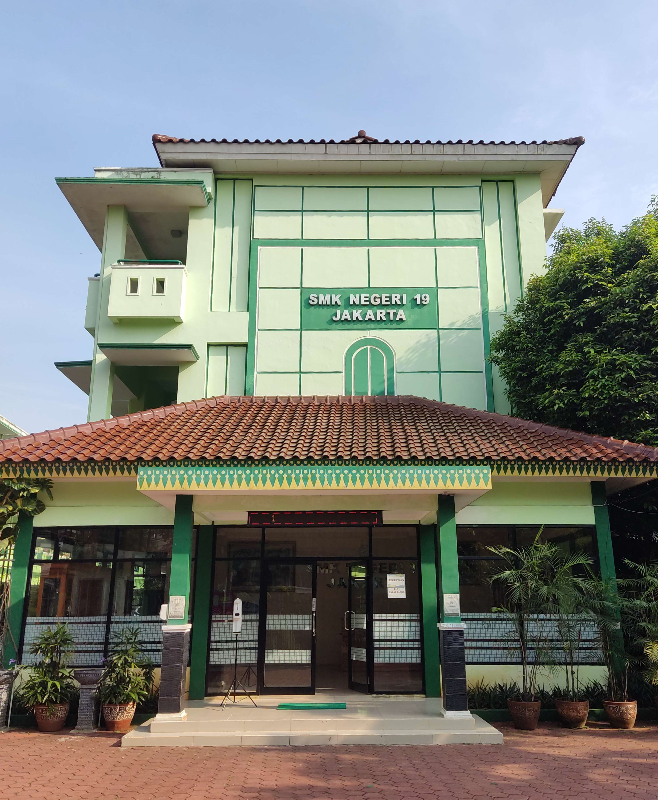

Alamat: Jl. Danau Limboto No. 11, Rt. 21 / Rw. 4
Kelurahan: Bendungan Hilir, Kecamatan: Tanah Abang
Kota Admistrasi: Jakarta Pusat
Provinsi: DKI JAKARTA
Kode Pos: 10210
Telepon/Fax.: (021)-5734929
E-mail: admin@smkn19jakarta.sch.id
Web: https://smkn19jakarta.sch.id
Nomor Identitas Sekolah
NPSN: 20100160
NSS: 341016001001
Dokumen & Perijinan
No. SK. Pendirian: 098/UKK-3/1969
Tgl. SK. Pendirian: 2 Juni 1969